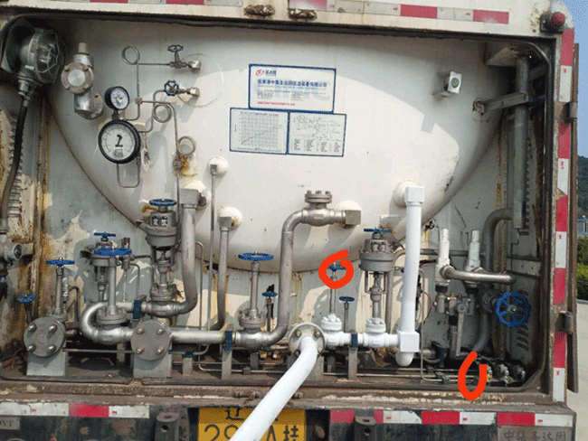

|
罐车向储罐倒液1打开LNG上进液开关(液体从上往下沿内壁下流,可以消耗一定量的气,减缓储罐LNG压力的上升速度).2气动阀开启.绿色按钮开启.记录当前液位.3当罐车压力没有储罐压力高时需要开启出液阀到汽化器增压到罐车4当储罐压力数值到0.69Mpa时‘停止倒液’开始储罐卸压或卸气 |
|
|  | ||
   液体压力比气体低,罐车进来,液罐需增加压力,比气罐高了,才能流过来,那么是压高往压低方向走 液体压力比气体低,罐车进来,液罐需增加压力,比气罐高了,才能流过来,那么是压高往压低方向走 |
 |
|
 储罐向罐车倒液由于液体从压高流向压低,储罐压低时,出液进入汽化器，汽化后压由BOG回罐中,LNG卸液后要将气动阀打开,把支管中的气回流到主干道防止细管道超压爆破,鼠标移动到显示器上面蓝色按钮那里显示闪电图标单击变绿后即开启出液阀不打开储罐液不从这里走,只走槽车，然后进入1#气化器，进入管网，那么那天晚上就是显示器流量不走了,开旁通开1#气化器点绿灯,所以得观察显示器的流量计. 储罐向罐车倒液由于液体从压高流向压低,储罐压低时,出液进入汽化器，汽化后压由BOG回罐中,LNG卸液后要将气动阀打开,把支管中的气回流到主干道防止细管道超压爆破,鼠标移动到显示器上面蓝色按钮那里显示闪电图标单击变绿后即开启出液阀不打开储罐液不从这里走,只走槽车，然后进入1#气化器，进入管网，那么那天晚上就是显示器流量不走了,开旁通开1#气化器点绿灯,所以得观察显示器的流量计.
|
||
罐车向管网卸压03:00的时候，LNG显示器管网压力从0.18降至0.15Mpa时,开启LNG进液管道的旁通，1#汽化器气动阀从S-O位置,显示器1#位置点击显示绿色，此时瞬流显示数据.这种情况停止卸压,管网气压供应不上时,LNG显示器没有瞬流时,不是CNG控制柜没有瞬流了,还转的情况关闭?0.15也进不去管网得0.19时? |
||
 |
储罐向管网卸压检查9号打点处的汽化器处三个阀门处于关闭状态,1#汽化器处的LNG出液与进液管道的旁通处于关闭状态,1#与2#之间的阀门处于开启状态,水浴处阀门处于关闭状态,手动开启出液阀,气动阀，值班室开启电子气动阀,出液-1#汽化器-水浴-粗管-粗管进入LNG调压箱中间两个管是LNG的西边的两个阀全开状态,流量计开启,旁通关闭,LNG是金鸿的所以得走流量计，卸压的速度没有出液汽化的速度快，关闭阀门顺序是先关内后关外.出液阀外面的阀门要停用半天后才能关闭防止管道超压爆裂.储罐的压与管网压持平时要经汽化升压,开启附近汽化器，最近管道回罐体,0.69时倒腾阀门往管网输压.此时储罐压力到0.69Mpa了,流量计管道与旁通管道对调，流量计开启，旁通关闭，BOG汽化器处阀门关闭，LNG本记录数据，卸压记录在开完旁通阀回到值班室从“流量计数据表”上抄写.卸压的下限是0.5Mp |
|
加气站向管网卸压一、满撬时瞬流大关闭撬车阀，打开CNG控制柜的控制阀（将高压软管气打到官网,瞬流与撬车剩余压为0时,关闭CNG控制柜的控制阀与卸车台阀.瞬流在200Nm3/h时关闭卸车台阀,二、剩5个一下压时瞬流没多少了卸车台阀不用关了.三、开启流量计阀门,关闭旁通阀门，开启BOG通加气站的那个阀门（不用理会压力造成的声音,四、等待管网压力降至220kpa给加气站打电话：你们那边开吧,BOG地下旁通阀开启（加气站卸压专用阀门,五、金鸿卸完压不急计数,猪圆玉自己会来.备注:流量计数据表中的标况流量是瞬流的意思,瞬流300多没有冰霜时因为法师冰系不强,停止卸压1分钟后再计数等待电脑反应,关闭卸车台阀的目的是不让BOG气进入CNG导致流量计计数,关闭LNG卸车入液出压口阀门,关闭LNG储罐增压汽化器（两个阀门,加气站电话7997926 |
 |
|
 EAG是BOG长期不用超压产生的气体,按时放BOG不超0.69就很少产生EAG,一般不用EAG就是这么回事。
BOG是LNG在储存过程中由液态天然气汽化而产生的气态天然气,而BOG管经过汽化器是因为管道中的气体和液体都存在,经过气化都变成气体变成CNG后进入官网。防爆接线箱通的是五个气动阀,由五个细管分别连接,五个气动阀的位置分别在上进液,下进液,出液,汽化器1#,汽化器2#,是卸液时用的。 EAG是BOG长期不用超压产生的气体,按时放BOG不超0.69就很少产生EAG,一般不用EAG就是这么回事。
BOG是LNG在储存过程中由液态天然气汽化而产生的气态天然气,而BOG管经过汽化器是因为管道中的气体和液体都存在,经过气化都变成气体变成CNG后进入官网。防爆接线箱通的是五个气动阀,由五个细管分别连接,五个气动阀的位置分别在上进液,下进液,出液,汽化器1#,汽化器2#,是卸液时用的。
|
当到0.69时卸压多在晚上进行是因为白天胡江不让,他安排车倒班。到0.70时报警,按值班室的复位可以解除,点击显示器上的报警接触按钮也可以解除,但时间不长,因为这里解除了,过一会儿机器又把信息传过来了,LNG显示器中凡涉及数值的地方皆显示警告标记yello感叹号,所以根本解决还是得卸压。若警报不解除得用电工这招了,等到压力回到0.69以下了,按急停按钮,再拔出来就停止报警了。还可以将监控箱内开关阀门关闭,使加臭装置与另一个机器停止运行。 | |
 LNG气动阀电脑控制无反应到现场手动旋转关闭,手动旋转开启,未点亮绿色按钮瞬流会旋转多少而定,一天晚上蝈蝈手动开启绿色按钮没点他说是我点灭了显示器端若开启瞬流会大一些,就像CNG的调压器一样,扳手撬开与开关打开自动上升 LNG气动阀电脑控制无反应到现场手动旋转关闭,手动旋转开启,未点亮绿色按钮瞬流会旋转多少而定,一天晚上蝈蝈手动开启绿色按钮没点他说是我点灭了显示器端若开启瞬流会大一些,就像CNG的调压器一样,扳手撬开与开关打开自动上升
|
 一、LNG流量计中的标况是瞬流当时走的量,工况是固定时间统计的量
一、LNG流量计中的标况是瞬流当时走的量,工况是固定时间统计的量二、罐车卸液处的那个汽化器,BOG管道阀关闭却漏气时,拧下面的螺丝扣,再用活口扳手拧紧。 三、在卸完液,将气动阀常开,把支管中的气,回流到主干道,防止细管道超压爆裂,并在LNG显示器处开启阀门按钮变绿色后处于 开启状态。四、LNG储罐内压力严禁超限,不低于0.4Mpa,充装压力控制在0.6Mpa+-10%, 检查槽车罐与储罐压力及液位,确定卸车方案,当储罐压力高于槽车压力时,宜采用顶部进液,否则反之.压力相近,可用上进液或下进液,也可同时进,给槽车增压,将槽车压力增高至储罐压力加0.2Mpa确认槽车压力达规定后,关闭气液相通的阀,正确开启进液阀。观察进液管,如果结霜并有流液声,表明卸车正常,如接头等泄露,立即停止卸车操作,排除险情。LNG的稳压器,调压器,没开是因为从旁通走气速度快,如果把稳压器开启,是起到额定的作用。 加压装置处两个调压器与CNG那里是一个意思。 第八个巡点一直没有使用的管是气泵管绿色把手阀门不开按黑色按钮无作用。 |
|
| 加臭控制器能加到红太阳饭店量多燃烧不充分会收到投诉。 | ||
| 水域将水供给给CNG水域使用。 | ||

锅炉房笔记
| 众诚锅炉房 锅炉烧水是用来换热用的,因为高压天然气减压的过程吸热,换热不充分,温度不够时,管道出现结霜或冰堵,因此减压前须换热,导致一调设备结霜.调整温度后打开开关后开始融化.二调温度也会上涨。锅炉升温导致下撬提前。 巡检锅炉房 水位显示：耗水没有柴油机蚝油快，开关是手动阀门，自动的坏了。 面包灯：机器有问题时会亮红灯，温度不低于40℃。 温度设置：在锅炉显示屏上面。 冬天来地暖操作 打开上进阀门,(热)打开下回阀门(循环泵使回水管道变热),打开循环泵开关，墙上第三个(向上扳),前面有两个字帖，循环泵地暖开始。 故障处理设备泵漏水～更换胶皮法兰 导致一调后结霜,用脚踹下来,用扳手砸上去，将管道处开关向左，锅炉两个OFF键，循环开关关闭。设备泵停了重开。 备注 1回水阀是降温用的，关闭后会升温。 2锅炉启动黄灯变绿灯，异常是红灯。 3气管黄色的是气泵用的，从墙孔穿到工具间。 |